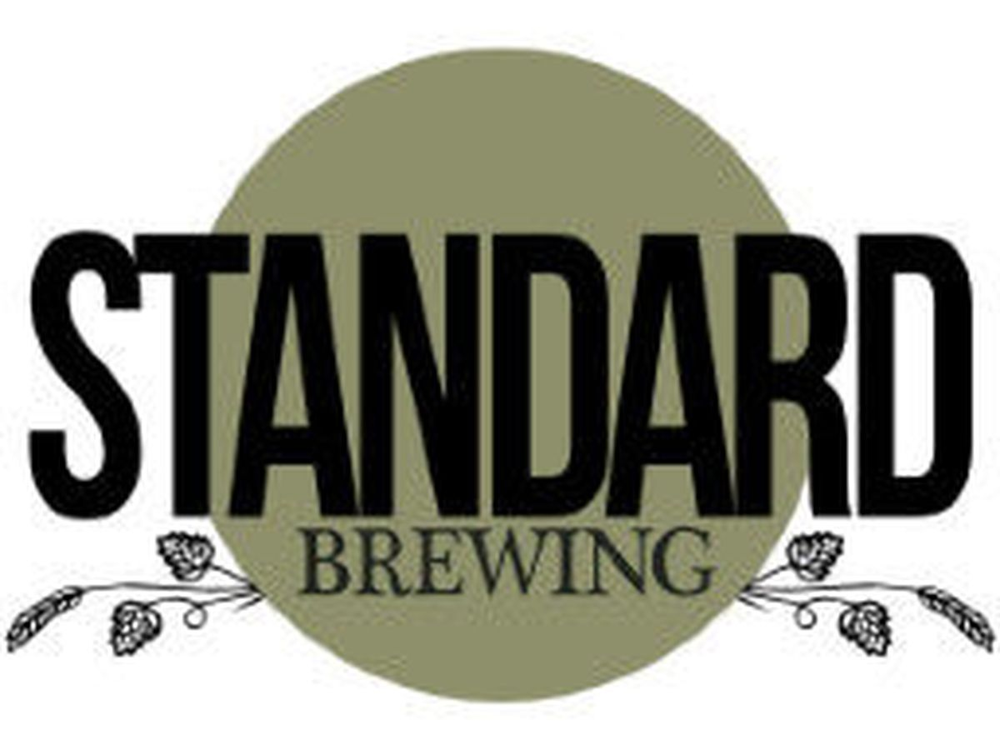

Seattle Brewery Finder

Standard Brewing
Owner and head brewer Justin Gerardy opened up Standard Brewing in 2013 and has been making large leaps ever since. Starting out as a nano-brewery, Standard has gone through major changes by adding more capacity plus a full menu and liquor options at their Jackson Street location. This gives patrons many different options, even if one of their dozen or so beer offerings don't quite hit the spot.
Not satisfied with your current choice?
- Standard Brewing Website
 -Facebook
-Facebook Twitter
Twitter Instagram
Instagram Untappd
Untappd
- 2504 S Jackson St
- Seattle, WA 98144
- Monday - Thursday: 3pm - 10pm
- Friday - Sunday: 12pm - 12am
- 206-535-1584
- justin@standardbrew.com